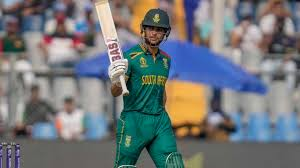

South Africa ODI Team
Strong contenders with a potent bowling attack.
About South Africa ODI Team
Country: South Africa
Home Ground: Various (e.g., Wanderers, Johannesburg)
Captain: Temba Bavuma
Coach: Rob Walter
South Africa’s ODI team, the Proteas, is known for its pace bowling and dynamic batting, consistently reaching World Cup knockouts.
South-African Players
Temba Bavuma (C)
Captain, batsman.

Quinton de Kock
Wicketkeeper-batsman, aggressive opener.

Reeza Hendricks
Batsman, consistent scorer.

Aiden Markram
Batsman, middle-order.
Heinrich Klaasen
Wicketkeeper-batsman, power-hitter.
David Miller
Batsman, finisher.
Marco Jansen
All-rounder, pace bowler.
Kagiso Rabada
Bowler, pace spearhead.
Anrich Nortje
Bowler, express pace.
Keshav Maharaj
Spinner, left-arm orthodox.
Tabrez Shamsi
Spinner, wrist-spinner.